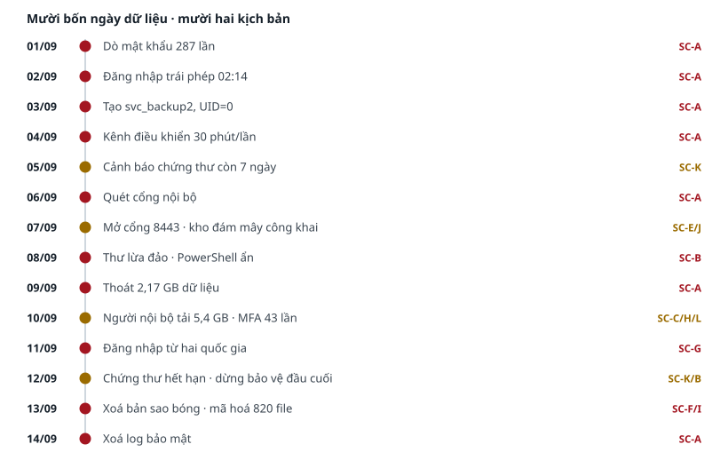
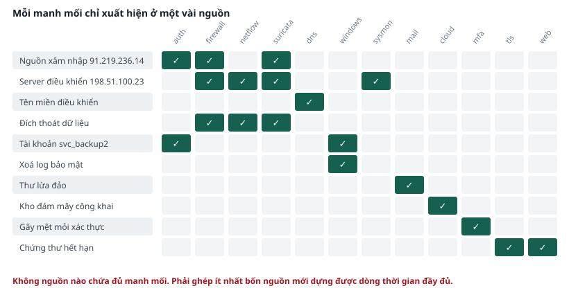

PHẦN C · HIỂU BỘ DỮ LIỆU#
Mười ba file và cách đọc từng định dạng
- Tổ chức giả định và cửa sổ thời gian
- Danh mục mười bảy file dữ liệu
- Cách đọc từng định dạng log
- Ba file hồ sơ đối chiếu
PHẦN C · DỮ LIỆU
Chương 7 · Tổ chức giả định và cửa sổ thời gian#
Toàn bộ dữ liệu đến từ một tổ chức duy nhất, trong cùng một khoảng thời gian.
7.1. Công ty Cổ phần Thương mại Số Minh An#
| Thông tin | Nội dung |
|---|---|
| Lĩnh vực | Thương mại điện tử |
| Quy mô | 180 nhân viên |
| Hệ thống chính | Cổng dịch vụ khách hàng, server file nội bộ, cơ sở dữ liệu kế toán, server backup, cổng truy cập từ xa cho nhà thầu |
| Địa chỉ công cộng | 203.0.113.10 |
| Mạng nội bộ | 192.168.10.0/24 |
7.2. Cửa sổ thời gian#
GHI NHỚ
Toàn bộ dữ liệu nằm trong khoảng từ 01/09/2026 00:00 đến 14/09/2026 23:59, theo giờ Việt Nam. Thời điểm giả định của buổi phân tích là sáng 15/09/2026. Khi dùng Grafana, luôn đặt khoảng thời gian là 2026-09-01 đến 2026-09-15, nếu không màn hình sẽ trống rỗng.
Đây là lỗi phổ biến nhất khi bắt đầu dùng Grafana trong bộ lab này. Mặc định Grafana hiển thị sáu giờ gần nhất, tức là tháng 9 năm nay, trong khi dữ liệu nằm ở tháng 9 năm 2026. Kết quả là không có gì hiển thị và bạn sẽ tưởng việc nạp dữ liệu thất bại.
7.3. Các địa chỉ mạng trong dữ liệu#
Hiểu ý nghĩa các dải địa chỉ giúp bạn đọc log nhanh hơn nhiều.
| Dải địa chỉ | Ý nghĩa |
|---|---|
| 192.168.10.x | Server và workstation trong mạng nội bộ của công ty |
| 192.168.20.x | Phân đoạn riêng của máy phân tích trong lab |
| 203.0.113.10 | Địa chỉ công cộng của công ty, nơi khách truy cập cổng dịch vụ |
| 203.0.113.2 đến 59 | Các dịch vụ bên ngoài mà công ty kết nối tới |
| 203.0.113.60 đến 199 | Khách truy cập cổng dịch vụ khách hàng |
| 113.161.44.x và 14.161.9.x | Nhân viên truy cập từ văn phòng hoặc từ nhà |
CẢNH BÁO
Mọi địa chỉ trong bộ dữ liệu đều là hư cấu, thuộc các dải dành riêng cho tài liệu kỹ thuật. Không thử kết nối tới bất kỳ địa chỉ nào xuất hiện trong dữ liệu.

7.4. Điều bạn chưa được biết#
Trong bộ dữ liệu có cấy sẵn dấu vết của một số sự việc. Tài liệu này không mô tả chúng. Nhiệm vụ của bạn qua sáu buổi là tự phát hiện bằng phương pháp được dạy.
Giảng viên có sổ tay chứa đáp án đầy đủ. Bạn không nên hỏi đáp án trước khi làm xong bài, vì phần giá trị nhất của bộ lab nằm ở quá trình đi tìm.
PHẦN C · DỮ LIỆU
Chương 8 · Danh mục mười bảy file dữ liệu#
Toàn bộ file nằm ở ~/lab/dulieu trên máy Kali và /var/lab/dulieu trên máy Ubuntu. Hai bản giống hệt nhau.
8.1. Bảng danh mục#
| File | Số dòng | Dung lượng | Nội dung |
|---|---|---|---|
| auth.log | 34.734 | 4,0 MB | Log xác thực của bốn server Linux: đăng nhập thành công và thất bại, nâng đặc quyền, tạo và sửa tài khoản |
| audit.log | 5.205 | 0,9 MB | Kết quả hệ thống kiểm toán nhân Linux, ghi theo các quy tắc có gắn từ khoá |
| pfsense_filterlog.log | 191.937 | 29,9 MB | Log firewall biên: mọi kết nối được cho qua hoặc bị chặn |
| netflow.csv | 38.637 | 3,6 MB | Log luồng mạng, có số byte đi ra và đi vào của từng phiên kết nối |
| suricata_eve.json | 6.365 | 2,3 MB | Cảnh báo của IDS |
| windows_security.ndjson | 96.618 | 19,8 MB | Log bảo mật Windows của bảy workstation và server file |
| sysmon.ndjson | 64.004 | 18,4 MB | Log process, kết nối mạng và thay đổi sổ đăng ký trên máy Windows |
| web_access.log | 180.640 | 34,2 MB | Log truy cập cổng dịch vụ khách hàng |
| dns_query.log | 96.550 | 12,0 MB | Log truy vấn tên miền của toàn bộ máy nội bộ |
| mail.log | 14.006 | 1,4 MB | Log server email, có kết quả xác thực người gửi |
| kiem_ke_tai_san.csv | 13 | nhỏ | Danh mục mười hai hệ thống: địa chỉ, chức năng, mức quan trọng, người chịu trách nhiệm |
| danh_sach_nhan_su.csv | 14 | nhỏ | Danh sách tài khoản, bộ phận, trạng thái làm việc, giờ làm việc, workstation |
| ho_so_thay_doi.csv | 7 | nhỏ | Sáu thay đổi hệ thống trong kỳ và trạng thái phê duyệt |
Bảng 8.1 — Tổng cộng 747.194 dòng, 129,7 MB.
8.2. Bốn định dạng file#
| Định dạng | File thuộc nhóm | Cách đọc |
|---|---|---|
| Syslog | auth.log, dns_query.log, mail.log, pfsense_filterlog.log | Mỗi dòng bắt đầu bằng thời gian, tên máy, rồi nội dung. Dùng grep và awk |
| Mỗi dòng một đối tượng JSON | suricata_eve.json, windows_security.ndjson, sysmon.ndjson | Mỗi dòng là một đối tượng độc lập. Dùng jq hoặc logq.py |
| Bảng ngăn cách bằng dấu phẩy | netflow.csv và ba file hồ sơ | Dòng đầu là tên cột. Dùng awk với tuỳ chọn -F"," |
| Log web dạng combined | web_access.log | Định dạng chuẩn của server web. Dùng awk theo vị trí cột |
PHẦN C · DỮ LIỆU
Chương 9 · Cách đọc từng định dạng log#
Bốn định dạng, mỗi định dạng có một cách bóc tách riêng. Chương này là chương tra cứu.
9.1. Định dạng syslog#
Đây là định dạng của auth.log, dns_query.log và mail.log. Cấu trúc gồm ba phần: thời gian, tên máy, nội dung.
Cấu trúc và cách bóc tách
Sep 2 02:14:33 vpn-gw-01 sshd[33106]: Accepted password for nhathau_vt from 91.219.236.14 port 54118 ssh2
|--------------| |---------| |--------------------------------------------------------------------------|
thời gian tên máy nội dung
# Lấy cột theo vị trí: cột 1 là tháng, 2 là ngày, 3 là giờ, 4 là tên máy
awk '{print $4}' auth.log | sort -u # liệt kê các máy có trong log
awk '{print $1, $2}' auth.log | uniq -c # đếm số dòng theo từng ngày
# Lấy một giá trị nằm sau một từ khoá, ví dụ địa chỉ sau chữ from
grep -oP 'from \K[0-9.]+' auth.log | sort | uniq -c | sort -rn | head
LƯU Ý
Cách viết grep -oP kèm \K nghĩa là: tìm chuỗi đứng sau từ khoá, nhưng chỉ in ra phần sau, không in từ khoá. Đây là cách nhanh nhất để lấy địa chỉ hoặc tên tài khoản ra khỏi một dòng log.
9.2. Định dạng log firewall pfSense#
Đây là định dạng khó đọc nhất trong bộ dữ liệu, nhưng chỉ cần nhớ bảy trường. Phần sau chữ filterlog là một chuỗi các trường ngăn cách bằng dấu phẩy.
Bảy trường cần nhớ
Sep 9 03:12:07 pfsense filterlog: 1200,,,1000000103,em1,match,pass,in,4,0x0,,64,
30785,0,DF,6,tcp,1500,192.168.10.20,185.199.110.153,51234,443,1448,S,1234567,,65535,,
# Đếm từ sau chữ filterlog, mỗi dấu phẩy là một trường:
# trường 5 = giao diện mạng (em0 hướng Internet, em1 nội bộ, em2 phân đoạn Kali)
# trường 7 = hành động (pass là cho qua, block là chặn)
# trường 17 = giao thức (tcp, udp)
# trường 18 = độ dài gói tin tính bằng byte
# trường 19 = địa chỉ nguồn
# trường 20 = địa chỉ đích
# trường 21 = cổng nguồn
# trường 22 = cổng đích
Ba câu hỏi thường gặp
# Đếm số kết nối bị chặn
awk -F"," '$7=="block"' pfsense_filterlog.log | wc -l
# Top 10 cổng đích bị quét từ bên ngoài
awk -F"," '$5=="em0" && $7=="block" {print $22}' pfsense_filterlog.log \
| sort | uniq -c | sort -rn | head -10
# Các đích mà một máy nội bộ kết nối tới
awk -F"," '$19=="192.168.10.20" {print $20}' pfsense_filterlog.log \
| sort | uniq -c | sort -rn | head -10
CẢNH BÁO
Trường 18 là độ dài của một gói tin, tối đa khoảng 1500 byte. Không dùng trường này để tính tổng khối lượng dữ liệu đã chuyển, vì firewall chỉ ghi gói đầu tiên của mỗi kết nối. Muốn tính khối lượng, phải dùng file netflow.csv.
9.3. Định dạng mỗi dòng một đối tượng JSON#
Đây là định dạng của suricata_eve.json, windows_security.ndjson và sysmon.ndjson. Mỗi dòng là một đối tượng độc lập, có thể đọc riêng lẻ.
Năm lệnh jq cần thuộc
# Xem cấu trúc của một dòng cho dễ hình dung
head -1 windows_security.ndjson | jq .
# Liệt kê các trường có trong file
head -1 sysmon.ndjson | jq "keys"
# Lọc theo một điều kiện rồi in ra vài trường
jq -r 'select(.EventID==1102) | "\(.TimeCreated) \(.Computer) \(.TargetUserName)"' \
windows_security.ndjson
# Đếm số sự kiện theo mã
jq -r ".EventID" windows_security.ndjson | sort -n | uniq -c | sort -rn | head
# Truy cập trường lồng nhau bằng dấu chấm
jq -r ".alert.signature" suricata_eve.json | sort | uniq -c | sort -rn | head
9.4. Khi không dùng được jq#
Nếu jq báo lỗi hoặc bạn thấy cú pháp của nó khó, hãy dùng công cụ thay thế do ban tổ chức viết. Kết quả giống hệt.
Ba cách dùng logq.py
# Lọc và lấy trường
python3 ~/lab/congcu/logq.py windows_security.ndjson \
--loc EventID=1102 --lay Computer,TargetUserName
# Đếm theo một trường
python3 ~/lab/congcu/logq.py suricata_eve.json --dem alert.signature
# Đếm theo trường lồng nhau, dùng dấu chấm giống jq
python3 ~/lab/congcu/logq.py sysmon.ndjson --loc EventID=1 --dem Computer
9.5. Định dạng netflow#
File netflow.csv ghi lại từng phiên kết nối, kèm số byte đã chuyển. Đây là nguồn duy nhất trả lời được câu hỏi về khối lượng dữ liệu.
| Cột | Tên | Ý nghĩa |
|---|---|---|
| 1 | thoi_diem_bat_dau | Thời điểm phiên kết nối bắt đầu |
| 2 | thoi_diem_ket_thuc | Thời điểm phiên kết nối kết thúc |
| 3 | dia_chi_nguon | Máy khởi tạo kết nối |
| 4 | dia_chi_dich | Máy nhận kết nối |
| 5, 6 | cong_nguon, cong_dich | Cổng hai đầu |
| 7 | giao_thuc | TCP hoặc UDP |
| 8 | so_goi | Số gói tin |
| 9 | so_byte_ra | Số byte đi từ nguồn tới đích |
| 10 | so_byte_vao | Số byte đi từ đích về nguồn |
Tính khối lượng dữ liệu
# Tổng byte đi ra theo từng đích, sắp giảm dần
awk -F"," 'NR>1 {b[$4]+=$9} END {for (i in b) printf "%-18s %12d\n", i, b[i]}' \
netflow.csv | sort -k2 -rn | head -10
# Đổi sang megabyte cho dễ đọc
awk -F"," 'NR>1 {b[$4]+=$9} END {for (i in b) printf "%-18s %9.2f MB\n", i, b[i]/1048576}' \
netflow.csv | sort -k2 -rn | head -10
9.6. Định dạng log web#
Cấu trúc và cách bóc tách
203.0.113.75 - - [09/Sep/2026:14:22:31 +0700] "GET /san-pham/128 HTTP/1.1" 200 4821 "-" "Mozilla/5.0 ..."
|----------| |------------------------| |--| |------------| |-| |--| |------------|
cột 1 cột 4 cột 6 cột 7 cột 9 cột 10 từ cột 12
địa chỉ nguồn thời gian phương thức đường dẫn mã trạng thái kích thước công cụ
# Đếm mã trạng thái
awk '{print $9}' web_access.log | sort | uniq -c | sort -rn
# Các đường dẫn bị truy cập nhiều nhất mà trả về lỗi 404
awk '$9==404 {print $7}' web_access.log | sort | uniq -c | sort -rn | head -15
# Lọc theo công cụ truy cập tự động
grep "python-requests" web_access.log | awk '{print $1}' | sort | uniq -c | sort -rn
PHẦN C · DỮ LIỆU
Chương 10 · Ba file hồ sơ đối chiếu#
Ba file này không phải log. Chúng là hồ sơ quản lý, và là điều kiện để phân tích có kết luận.
10.1. Vì sao cần hồ sơ#
| Nếu chỉ có log | Khi có thêm hồ sơ |
|---|---|
| Thấy một tài khoản mới được tạo, không biết hợp lệ hay không | Đối chiếu change record. Không có phiếu tương ứng, kết luận là bất thường |
| Thấy đăng nhập lúc 2 giờ sáng, không rõ có đáng ngờ không | Đối chiếu danh sách nhân sự. Tài khoản này chỉ làm việc khung 9 đến 17 giờ |
| Thấy một máy bị tác động, không rõ mức độ nghiêm trọng | Đối chiếu asset inventory. Máy này ở mức quan trọng rất cao và có chứa dữ liệu cá nhân |
| Thấy một tài khoản tải nhiều file, không rõ có bình thường không | Đối chiếu danh sách nhân sự. Người này sắp nghỉ việc |
GHI NHỚ
Nguyên tắc xuyên suốt bộ lab: một dòng log đơn lẻ không bao giờ đủ để kết luận. Kết luận đến từ việc đối chiếu log với hồ sơ quản lý, và đối chiếu nhiều nguồn log với nhau.

10.2. Cách dùng ba file hồ sơ#
Năm thao tác tra cứu
cd ~/lab/dulieu
# Xem hồ sơ ở dạng bảng cho dễ đọc
column -s, -t kiem_ke_tai_san.csv | less -S # bấm q để thoát
# Tra một tài khoản trong danh sách nhân sự
grep "hoangvanh" danh_sach_nhan_su.csv
# Liệt kê các hệ thống ở mức quan trọng rất cao
awk -F"," '$6=="Rất cao" {print $2, $5}' kiem_ke_tai_san.csv
# Xem toàn bộ thay đổi đã được phê duyệt trong kỳ
column -s, -t ho_so_thay_doi.csv
# Tra một địa chỉ IP xem thuộc máy nào
grep "192.168.10.20" kiem_ke_tai_san.csv